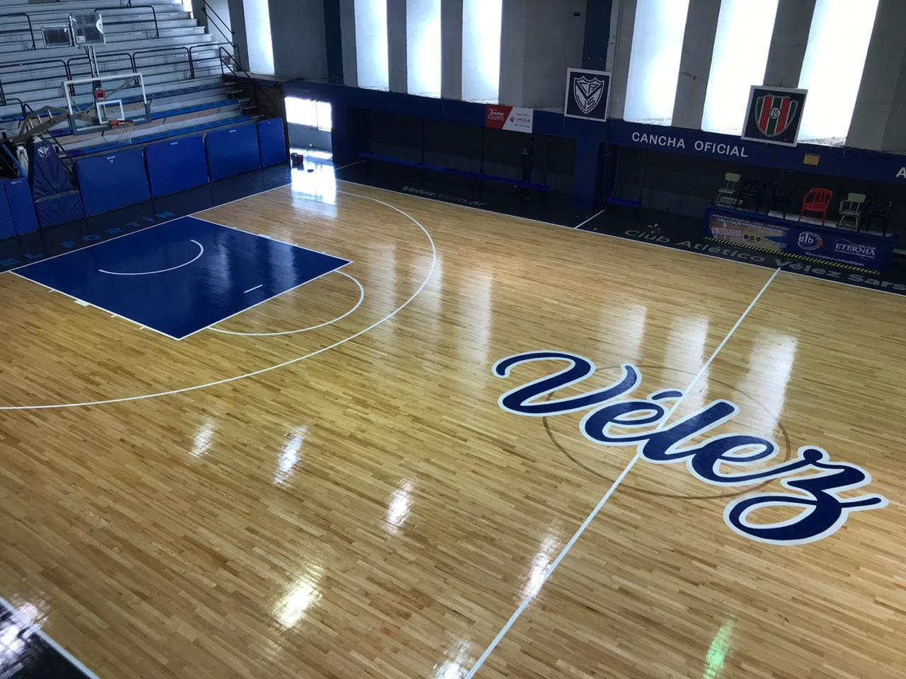
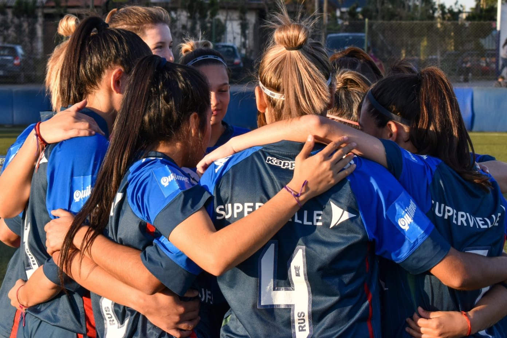

Cierre de fase con las manos vacias:
Un bombazo de tres puntos sobre la chicharra final del último cuarto frustró lo que hubiera sido un cierre de temporada con gran honor para Vélez Sarsfield en la Liga Federal 2022, que tuvo todo en su favor para ganar el juego, pero se quedó en la parte final y lo pagó muy caro. Si bien el equipo de Liniers ya no tenía posibilidades de clasificar a la siguiente ronda (solamente entran los dos primeros de la zona), jugó el encuentro como si las tuviera y le jugó de igual a igual a uno de los líderes de la División Metropolitana. Desde el inicio, la formación velezana empezó firme y suelto en su juego, con un intratable Felipe Sánchez, quien se despachó con 12 puntos en el primer cuarto, aportando cuatro triples (efectividad del ciento por ciento) y un doble; otro que también se hizo valer en el tablero adversario fue Joaquín Ortiz, con 7 unidades (dos dobles y un triple). Si bien los dirigidos por Horacio Beigier dejaron un mejor semblante en el segmento, River no lo dejó escapar fácilmente y así lo reflejó un lanzamiento de tres puntos convertido por Martín Trímboli sobre el cierre, que acortó la distancia (26-22 en favor de la visita). Ya en el segundo capítulo se dio un juego en el cual fueron rachas de cada uno. Sin embargo, en ningún momento el dueño de casa pudo pasar al frente. Una de las razones es que el Fortín estuvo más certero en la parte ofensiva, porque empleó un juego más colectivo y generó espacios para concretar con mayor facilidad puntos debajo del canasto; faltando 2 minutos y 34 segundos para el descanso, la formación velezana logró imponer un parcial de 6-0 (44-38), con dos dobles de Juan Aguas y uno de Iván Antoniuk, que se dieron producto de rebotes ofensivos y ataques rápidos. No obstante, el vencedor no se quedó atrás y respondió en el último minuto con un parcial de 5-0 (44-43), con un triple del goleador Gennaro Lorio y un doble de Germán Fernández para finalizar mejor la primera mitad. El elenco de Liniers se mostró mucho más concentrado, jugó más suelto en el tercer cuarto y además se aprovechó de un errático River para sacar mayor diferencia. El goleo de Aguirre (8 tantos, con dos triples y un doble) y Antoniuk (6, con dos dobles y dos simples) marcaron la cancha para un Vélez que exprimió nuevamente los contraataques como herramienta y además siguió generando puntos debajo del canasto con asistencias de Sánchez. Uno de los triples de Aguirre llegó a poner la máxima del partido a 24 segundos del cierre del capítulo (68 a 55).
Victoria del equipo de futbol femenino:
Las locales dominaron por completo la primera etapa y marcó la diferencia. A los 15 minutos, la arquera del Fortín jugó corto con Maia Leguizamón, quien perdió el balón. Cavigioli aprovechó para asistir a Maltaneri, quien ingresó al área y definió con precisión para abrir el marcador. Las imprecisiones de las jugadoras de Vélez se hicieron más notorias y el segundo tanto llego a los 17 minutos luego de una jugada colectiva: gran pase largo a Cavigioli, quien se la picó a Siben para ampliar la ventaja. Las dueñas de casa siguieron generando jugadas de riesgo y poniendo a prueba constantemente a la arquera velezana. Pasaron tan solo 6 minutos para que el equipo de Rosario lograra estirar la diferencia de la mano de Cavigioli nuevamente. En los minutos restantes, las Fortineras tuvieron situaciones para descontar, pero la suerte le jugó una mala pasada y se fueron al descanso 3-0 abajo. En el complemento partido fue abierto. Se generó un ida y vuelta, con un Argentino de Rosario que buscó seguir siendo el protagonista en los primeros minutos. Luego sí bajó el pie del acelerador y fue Vélez el que mejoró. Así, tuvo más oportunidades en ataque e intentó pisar un poco más en el campo rival, aunque sin llegar a generar real peligro de gol. A los 24 minutos Ríos ingresó al área con gran dominio del balón, le cometieron penal, pero fue desaprovechado por Caceci, quien remató afuera. Los 3 puntos se quedaron en Rosario. En la próxima fecha Vélez recibirá a Sarmiento en la Villa Olímpica.
Obras en el estadio:

Cada obra es un motivo de orgullo que agiganta el sentido de pertenencia de quienes la utilizan a diario y en esta oportunidad ya se disfruta la ampliación del sector de Hockey sobre Césped. En horas de la mañana del sábado, se llevó adelante el corte de cinta en el flamante espacio. Allí estuvieron Rodolfo Pérez, Vicepresidente 3° del Club y encargado del Departamento de Obras; Fernando López Balastegui, Presidente del Departamento Deportivo; Juan Ripalda, Coordinador de la Actividad y Alicia Fazioli, otra de las grandes referentes en la conducción del Hockey Velezano. Junto a ellos también trabajó intensamente la Subcomisión de Hockey y allí estuvieron sus integrantes: Mariano González, María Laura Ibáñez, Andrea Veliz, Fabiana Fontana, Mónica Garibaldi y Walter Dos Santos. Esta obra oficia como un nuevo espacio ubicado detrás de uno de los arcos de la cancha principal. Posee césped sintético y cuenta con la presencia de un arco y las medidas reglamentarias del área. La idea inicial fue pensada para lograr un mejor entrenamiento de los córners cortos, cómo así también la ejecución de penales y el trabajo de la técnica de los deportistas. Posee césped sintético y cuenta con la presencia de un arco y las medidas reglamentarias del área. La idea inicial fue pensada para lograr un mejor entrenamiento de los córners cortos, cómo así también la ejecución de penales y el trabajo de la técnica de los deportistas.
Queres recibir todas las novedades del club?
Dejanos tu nombre apellido y mail